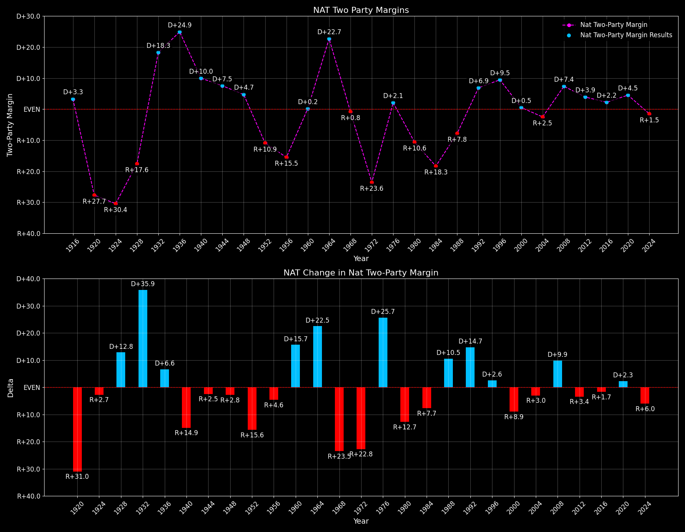

National (NAT)

National overview
National — Total Data
| Year | D | R | Nat. Margin | Total votes |
|---|---|---|---|---|
| 1960 | 34,220,984(49.7%) | 34,108,157(49.6%) | D+0.2 | 68,832,482 |
| 1964 | 43,129,040(61.1%)(Δ 8,908,056) | 27,175,754(38.5%)(Δ -6,932,403) | D+22.6(Δ D+22.4) | 70,641,751(Δ 1,809,269) |
| 1968 | 31,271,839(42.7%)(Δ -11,857,201) | 31,783,783(43.4%)(Δ 4,608,029) | R+0.7(Δ R+23.3) | 73,199,998(Δ 2,558,247) |
| 1972 | 29,173,222(37.5%)(Δ -2,098,617) | 47,168,710(60.7%)(Δ 15,384,927) | R+23.1(Δ R+22.4) | 77,744,027(Δ 4,544,029) |
| 1976 | 40,831,881(50.1%)(Δ 11,658,659) | 39,148,634(48.0%)(Δ -8,020,076) | D+2.1(Δ D+25.2) | 81,531,584(Δ 3,787,557) |
| 1980 | 35,480,115(41.0%)(Δ -5,351,766) | 43,903,230(50.7%)(Δ 4,754,596) | R+9.7(Δ R+11.8) | 86,509,678(Δ 4,978,094) |
| 1984 | 37,577,352(40.6%)(Δ 2,097,237) | 54,455,472(58.8%)(Δ 10,552,242) | R+18.2(Δ R+8.5) | 92,653,233(Δ 6,143,555) |
| 1988 | 41,809,476(45.6%)(Δ 4,232,124) | 48,886,597(53.4%)(Δ -5,568,875) | R+7.7(Δ D+10.5) | 91,594,686(Δ -1,058,547) |
| 1992 | 44,909,889(43.0%)(Δ 3,100,413) | 39,104,545(37.4%)(Δ -9,782,052) | D+5.6(Δ D+13.3) | 104,426,659(Δ 12,831,973) |
| 1996 | 47,402,357(49.2%)(Δ 2,492,468) | 39,198,755(40.7%)(Δ 94,210) | D+8.5(Δ D+3.0) | 96,277,223(Δ -8,149,436) |
| 2000 | 50,999,897(48.4%)(Δ 3,597,540) | 50,456,002(47.9%)(Δ 11,257,247) | D+0.5(Δ R+8.0) | 105,405,100(Δ 9,127,877) |
| 2004 | 59,028,444(48.3%)(Δ 8,028,547) | 62,040,610(50.7%)(Δ 11,584,608) | R+2.5(Δ R+3.0) | 122,290,630(Δ 16,885,530) |
| 2008 | 69,498,516(52.9%)(Δ 10,470,072) | 59,948,323(45.7%)(Δ -2,092,287) | D+7.3(Δ D+9.7) | 131,313,820(Δ 9,023,190) |
| 2012 | 65,915,795(51.1%)(Δ -3,582,721) | 60,933,504(47.2%)(Δ 985,181) | D+3.9(Δ R+3.4) | 129,085,410(Δ -2,228,410) |
| 2016 | 65,853,516(48.2%)(Δ -62,279) | 62,984,825(46.1%)(Δ 2,051,321) | D+2.1(Δ R+1.8) | 136,669,237(Δ 7,583,827) |
| 2020 | 81,283,501(51.3%)(Δ 15,429,985) | 74,223,975(46.8%)(Δ 11,239,150) | D+4.5(Δ D+2.4) | 158,429,631(Δ 21,760,394) |
| 2024 | 75,017,613(48.3%)(Δ -6,265,888) | 77,302,580(49.8%)(Δ 3,078,605) | R+1.5(Δ R+5.9) | 155,238,302(Δ -3,191,329) |
Column explanations
- Δ
- Change (delta) in the value from the previous election year.
- Year
- Election year.
- D
- Number of votes for the Democratic candidate (raw count(pct%)).
- R
- Number of votes for the Republican candidate (raw count(pct%)).
- Nat. Margin
- The national presidential margin for that year, including third-party votes ((D_total - R_total)/total_votes).
- Total votes
- Total voter turnout or ballots cast (when provided).
National — Third-Party Data
| Year | D | R | Other votes | 3rd-Party Nat. Share |
|---|---|---|---|---|
| 1960 | 34,220,984(49.7%) | 34,108,157(49.6%) | 503,341(0.7%) | 0.73% |
| 1964 | 43,129,040(61.1%)(Δ 8,908,056) | 27,175,754(38.5%)(Δ -6,932,403) | 336,957(0.5%) | 0.48% |
| 1968 | 31,271,839(42.7%)(Δ -11,857,201) | 31,783,783(43.4%)(Δ 4,608,029) | 10,144,376(13.9%) | 13.86% |
| 1972 | 29,173,222(37.5%)(Δ -2,098,617) | 47,168,710(60.7%)(Δ 15,384,927) | 1,402,095(1.8%) | 1.80% |
| 1976 | 40,831,881(50.1%)(Δ 11,658,659) | 39,148,634(48.0%)(Δ -8,020,076) | 1,551,069(1.9%) | 1.90% |
| 1980 | 35,480,115(41.0%)(Δ -5,351,766) | 43,903,230(50.7%)(Δ 4,754,596) | 7,126,333(8.2%) | 8.24% |
| 1984 | 37,577,352(40.6%)(Δ 2,097,237) | 54,455,472(58.8%)(Δ 10,552,242) | 620,409(0.7%) | 0.67% |
| 1988 | 41,809,476(45.6%)(Δ 4,232,124) | 48,886,597(53.4%)(Δ -5,568,875) | 898,613(1.0%) | 0.98% |
| 1992 | 44,909,889(43.0%)(Δ 3,100,413) | 39,104,545(37.4%)(Δ -9,782,052) | 20,412,225(19.5%) | 19.55% |
| 1996 | 47,402,357(49.2%)(Δ 2,492,468) | 39,198,755(40.7%)(Δ 94,210) | 9,676,111(10.1%) | 10.05% |
| 2000 | 50,999,897(48.4%)(Δ 3,597,540) | 50,456,002(47.9%)(Δ 11,257,247) | 3,949,201(3.7%) | 3.75% |
| 2004 | 59,028,444(48.3%)(Δ 8,028,547) | 62,040,610(50.7%)(Δ 11,584,608) | 1,221,576(1.0%) | 1.00% |
| 2008 | 69,498,516(52.9%)(Δ 10,470,072) | 59,948,323(45.7%)(Δ -2,092,287) | 1,866,981(1.4%) | 1.42% |
| 2012 | 65,915,795(51.1%)(Δ -3,582,721) | 60,933,504(47.2%)(Δ 985,181) | 2,236,111(1.7%) | 1.73% |
| 2016 | 65,853,516(48.2%)(Δ -62,279) | 62,984,825(46.1%)(Δ 2,051,321) | 7,830,896(5.7%) | 5.73% |
| 2020 | 81,283,501(51.3%)(Δ 15,429,985) | 74,223,975(46.8%)(Δ 11,239,150) | 2,922,155(1.8%) | 1.84% |
| 2024 | 75,017,613(48.3%)(Δ -6,265,888) | 77,302,580(49.8%)(Δ 3,078,605) | 2,918,109(1.9%) | 1.88% |
Column explanations
- Year
- Election year.
- D
- Number of votes for the Democratic candidate (raw count(pct%)).
- R
- Number of votes for the Republican candidate (raw count(pct%)).
- Other votes
- Number of votes for third-party (other) candidates (raw count(pct%)).
- 3rd-Party Nat. Share
- The national third-party share for that year (3rd-Party votes / total votes).

Two-party national overview
National — Two-Party Data
| Year | D | R | 2-Party Nat. Margin |
|---|---|---|---|
| 1960 | 34,220,984(50.1%) | 34,108,157(49.9%) | D+0.2 |
| 1964 | 43,129,040(61.3%)(Δ 8,908,056) | 27,175,754(38.7%)(Δ -6,932,403) | D+22.7(Δ D+22.5) |
| 1968 | 31,271,839(49.6%)(Δ -11,857,201) | 31,783,783(50.4%)(Δ 4,608,029) | R+0.8(Δ R+23.5) |
| 1972 | 29,173,222(38.2%)(Δ -2,098,617) | 47,168,710(61.8%)(Δ 15,384,927) | R+23.6(Δ R+22.8) |
| 1976 | 40,831,881(51.1%)(Δ 11,658,659) | 39,148,634(48.9%)(Δ -8,020,076) | D+2.1(Δ D+25.7) |
| 1980 | 35,480,115(44.7%)(Δ -5,351,766) | 43,903,230(55.3%)(Δ 4,754,596) | R+10.6(Δ R+12.7) |
| 1984 | 37,577,352(40.8%)(Δ 2,097,237) | 54,455,472(59.2%)(Δ 10,552,242) | R+18.3(Δ R+7.7) |
| 1988 | 41,809,476(46.1%)(Δ 4,232,124) | 48,886,597(53.9%)(Δ -5,568,875) | R+7.8(Δ D+10.5) |
| 1992 | 44,909,889(53.5%)(Δ 3,100,413) | 39,104,545(46.5%)(Δ -9,782,052) | D+6.9(Δ D+14.7) |
| 1996 | 47,402,357(54.7%)(Δ 2,492,468) | 39,198,755(45.3%)(Δ 94,210) | D+9.5(Δ D+2.6) |
| 2000 | 50,999,897(50.3%)(Δ 3,597,540) | 50,456,002(49.7%)(Δ 11,257,247) | D+0.5(Δ R+8.9) |
| 2004 | 59,028,444(48.8%)(Δ 8,028,547) | 62,040,610(51.2%)(Δ 11,584,608) | R+2.5(Δ R+3.0) |
| 2008 | 69,498,516(53.7%)(Δ 10,470,072) | 59,948,323(46.3%)(Δ -2,092,287) | D+7.4(Δ D+9.9) |
| 2012 | 65,915,795(52.0%)(Δ -3,582,721) | 60,933,504(48.0%)(Δ 985,181) | D+3.9(Δ R+3.4) |
| 2016 | 65,853,516(51.1%)(Δ -62,279) | 62,984,825(48.9%)(Δ 2,051,321) | D+2.2(Δ R+1.7) |
| 2020 | 81,283,501(52.3%)(Δ 15,429,985) | 74,223,975(47.7%)(Δ 11,239,150) | D+4.5(Δ D+2.3) |
| 2024 | 75,017,613(49.2%)(Δ -6,265,888) | 77,302,580(50.8%)(Δ 3,078,605) | R+1.5(Δ R+6.0) |
Column explanations
- Δ
- Change (delta) in the value from the previous election year.
- Year
- Election year.
- D
- Number of votes for the Democratic candidate (raw count(pct%)).
- R
- Number of votes for the Republican candidate (raw count(pct%)).
- 2-Party Nat. Margin
- The national presidential margin for that year, including third-party votes ((D_total - R_total)/total_votes).